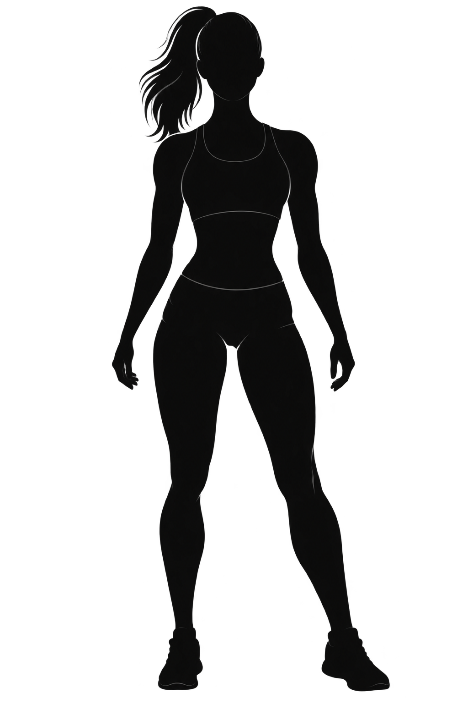

Recupero funzionale post-riabilitazione
Attività motoria successiva a percorsi riabilitativi, in presenza delle necessarie indicazioni e autorizzazioni sanitarie.
Non hai bisogno di allenarti di più, ma di un programma personalizzato che tenga conto delle tue esigenze e dei tuoi obiettivi.
Un percorso di allenamento costruito su di te, sulle tue capacità e sul tuo stile di vita. Con il supporto di una professionista che ti accompagna passo dopo passo, anche a distanza.
Magari hai provato programmi trovati online, allenamenti generici o schede che non tenevano conto delle tue reali esigenze.
All'inizio eri motivato, ma con il tempo sono arrivate difficoltà, dubbi e risultati diversi da quelli che speravi.
Il problema non è necessariamente la tua motivazione.
Spesso manca un programma costruito intorno alla persona, che tenga conto delle sue caratteristiche, delle sue capacità e dei suoi obiettivi.
Non devi adattarti a un allenamento qualsiasi.
È l'allenamento che deve adattarsi a te.

Sono una Chinesiologa, Personal Trainer e Fitness Coach Online. Mi occupo di attività motoria personalizzata, preparazione atletica e fitness coaching, con l'obiettivo di aiutare ogni persona a trovare un percorso di allenamento coerente con le proprie esigenze e possibilità.
Credo che ogni persona abbia una storia, caratteristiche e obiettivi differenti. Per questo non propongo programmi standardizzati, ma percorsi costruiti individualmente e adattati nel tempo.
Il mio lavoro si basa su formazione, attenzione alla persona e monitoraggio costante dei progressi.
Un percorso costruito sulle tue esigenze. L'attività motoria può assumere forme diverse in base alla persona, alla sua condizione e agli obiettivi che desidera raggiungere.
Attività motoria successiva a percorsi riabilitativi, in presenza delle necessarie indicazioni e autorizzazioni sanitarie.
Percorsi adattati alle diverse fasi, nel rispetto delle condizioni individuali e delle indicazioni del professionista sanitario di riferimento.
Attività orientata al mantenimento delle capacità motorie, della mobilità, dell'equilibrio e dell'autonomia.
Programmi personalizzati per persone con condizioni di salute stabilizzate, nel rispetto delle indicazioni sanitarie.
Esercizi e attività calibrati sulle capacità e sulle esigenze individuali.
Attività mirate a migliorare la mobilità, la consapevolezza del movimento e le abitudini quotidiane.
L'attività fisica regolare è uno degli strumenti più importanti per favorire il benessere generale e contribuire alla prevenzione di numerose patologie croniche.
Una grande analisi osservazionale pubblicata su JAMA Internal Medicine, condotta su oltre 660.000 persone, ha evidenziato un'associazione tra livelli più elevati di attività fisica e una riduzione del rischio di mortalità prematura. Si tratta di un'associazione statistica osservata nella popolazione, non di una garanzia di risultato individuale.
Secondo le linee guida dell'Organizzazione Mondiale della Sanità, per gli adulti è raccomandato:

Contribuisce al mantenimento della salute del cuore e della circolazione, favorendo il controllo della pressione arteriosa.
Il movimento aiuta a migliorare la sensibilità all'insulina e il controllo della glicemia, contribuendo alla salute metabolica.
Può favorire il benessere mentale, la qualità del sonno e alcune funzioni cognitive. Può contribuire a ridurre sintomi di ansia e depressione.
L'allenamento della forza aiuta a mantenere massa muscolare e capacità funzionali, oltre alla salute delle ossa e dell'equilibrio.
Le evidenze scientifiche indicano che una maggiore attività fisica è associata a un rischio inferiore di sviluppare alcuni tumori.
Non serve stravolgere le tue abitudini: serve un programma adeguato, sostenibile e costruito sulle tue possibilità.
Un percorso in tre fasi, costruito intorno a te. Non esiste un unico allenamento adatto a tutti.
Partiamo da te. Attraverso una prima consulenza analizziamo obiettivi, abitudini, difficoltà ed esigenze, per individuare il punto di partenza e definire una direzione di lavoro.
Costruiamo il tuo programma personalizzato. Ricevi un piano pensato per le tue caratteristiche: in autonomia oppure accompagnato attraverso allenamenti in videochiamata.
Il percorso evolve insieme a te. Monitoriamo i progressi, valutiamo le difficoltà e adattiamo il programma quando necessario, per costruire abitudini sostenibili.
Tre modalità per allenarti, un unico obiettivo: partire da te. Tutti i percorsi durano 6 settimane e comprendono un programma personalizzato e un supporto dedicato.
Per chi desidera allenarsi in autonomia, seguendo un programma personalizzato e ricevendo supporto durante il percorso.
Per chi desidera un supporto più diretto e vuole essere seguito anche durante alcune sessioni di allenamento.
Per chi desidera un accompagnamento più costante, con un allenamento guidato ogni settimana.
Tutti i prezzi indicati si riferiscono all'intero percorso di 6 settimane.
Il supporto WhatsApp è disponibile 7 giorni su 7, ma non prevede necessariamente risposte immediate.
ALLENAMENTO PERSONALIZZATO
Con un programma personalizzato puoi:
Allenarti seguendo le tue capacità e il tuo livello di partenza
01Avere obiettivi chiari e un percorso organizzato
02Ricevere indicazioni e supporto durante le 6 settimane
03Monitorare i tuoi progressi
04Adattare il programma quando cambiano le tue esigenze
05Scegliere il livello di accompagnamento più adatto a te
06Chi ha già iniziato il suo percorso racconta la sua esperienza.
La tua opinione aiuta altre persone a iniziare il loro percorso.
Tutto quello che c'è da sapere prima di iniziare.
Il percorso si svolge interamente online. Dopo una prima videoconsulenza, vengono analizzate le tue esigenze e i tuoi obiettivi. Riceverai un programma personalizzato e il supporto previsto dal pacchetto scelto.
No. Il programma viene costruito tenendo conto del tuo livello di partenza, delle tue capacità e delle tue esigenze.
Tutti i pacchetti hanno una durata di 6 settimane.
Il Percorso Autonomo prevede un programma personalizzato e supporto online. Il Percorso Guidato aggiunge 3 allenamenti in videochiamata. Il Percorso Completo aggiunge 6 allenamenti in videochiamata, uno a settimana.
Sì. Il percorso è online e il programma può essere organizzato in base alle possibilità e agli strumenti disponibili.
No. Si tratta esclusivamente di una consulenza informativa e non comprende elaborazione di diete, prescrizioni alimentari o piani nutrizionali personalizzati.
Il supporto è previsto 7 giorni su 7, ma non garantisce risposte immediate. I tempi di risposta dipendono dalla disponibilità.
Ogni situazione deve essere valutata individualmente. In presenza di patologie, infortuni, gravidanza, post parto o altre condizioni specifiche, il percorso deve rispettare le indicazioni del professionista sanitario di riferimento e le eventuali autorizzazioni necessarie.